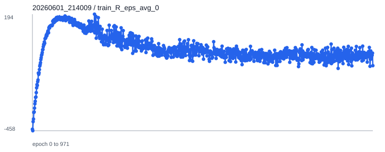
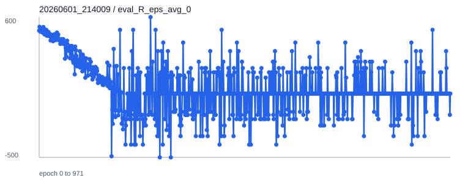
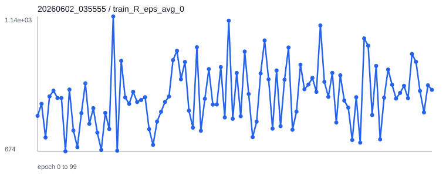
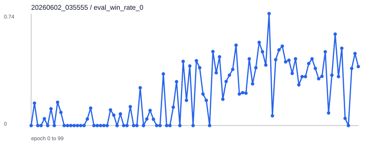
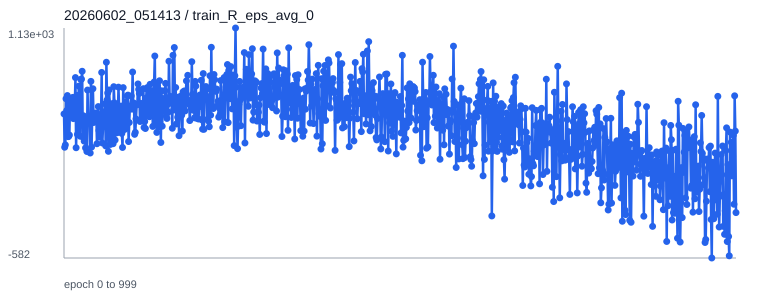
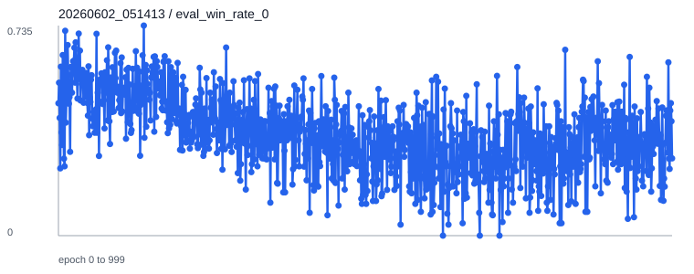
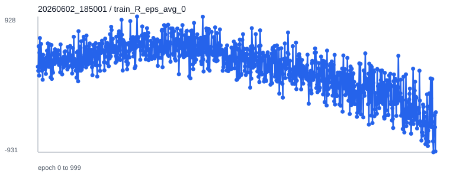
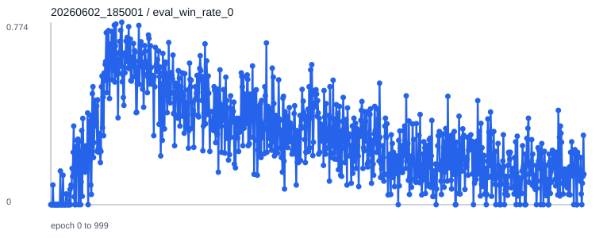

日期：2026-06-03。目标是在已经通过短训练 sanity check 的基础上，完成固定形态、形态可进化 warm-up 到对抗、runs 原实验复现、统一评测和曲线输出。
| 组别 | 目的 | 训练配置 | 状态 |
|---|---|---|---|
| 基础 fixed run-to-goal | 训练固定形态 Ant 的基础奔跑能力。 | config/run-to-goal-ants-v0.yaml + GPU resume 配置 | 完成，CPU 28 epoch + GPU resume 972 epoch。 |
| 进阶 devants warm-up | 在 robo-sumo-devants 同观测/同网络下，用 run-to-goal 风格奖励预训练可变形态策略。 | config/repro/devants-compatible-warmup-long.yaml | 完成 100 epoch。 |
| 进阶 devants 对抗 | 从 warm-up checkpoint 继承参数，切换到对抗奖励继续训练。 | config/repro/devants-confrontation-long.yaml | 完成 1000 epoch。 |
| runs 复现实验 | 使用仓库原配置重新训练，与 runs/robo-sumo-devants-v0 原 checkpoint 统一比较。 | config/robo-sumo-devants-v0.yaml | 完成 1000 epoch。 |
| 原始 checkpoint 基准 | 不训练，只评测仓库自带 checkpoint。 | runs/robo-sumo-devants-v0/config.yml | 完成 100 episode 评测。 |
| 产物 | 路径 |
|---|---|
| 长训练 manifest | reports/long_training/manifest.env |
| 长训练日志目录 | reports/long_training/logs/ |
| 评测 JSON 目录 | reports/long_training/eval/ |
| 训练曲线目录 | reports/long_training/curves/ |
| 曲线索引 | reports/long_training/curves/curve_summary.json |
| 实验 | agent_0 | agent_1 | 说明 |
|---|---|---|---|
| 基础 fixed run-to-goal 最终 | tmp/run-to-goal-ants-v0/20260601_214009/models/agent_0/epoch_0972.p | tmp/run-to-goal-ants-v0/20260601_214009/models/agent_1/epoch_0972.p | 从 CPU epoch_0028 续训 972 epoch，合计约 1000 epoch。 |
| 进阶 warm-up 中间 checkpoint | tmp/robo-sumo-devants-v0/20260602_035555/models/agent_0/epoch_0100.p | tmp/robo-sumo-devants-v0/20260602_035555/models/agent_1/epoch_0100.p | 同网络、run-to-goal warm-up 奖励。 |
| 进阶对抗最终 checkpoint | tmp/robo-sumo-devants-v0/20260602_051413/models/agent_0/epoch_1000.p | tmp/robo-sumo-devants-v0/20260602_051413/models/agent_1/epoch_1000.p | 从 warm-up epoch_0100 加载。 |
| 复现实验最终 checkpoint | tmp/robo-sumo-devants-v0/20260602_185001/models/agent_0/epoch_1000.p | tmp/robo-sumo-devants-v0/20260602_185001/models/agent_1/epoch_1000.p | 使用原始 config/robo-sumo-devants-v0.yaml 从零训练。 |
| 原始 runs checkpoint | runs/robo-sumo-devants-v0/models/agent_0/best.p | runs/robo-sumo-devants-v0/models/agent_1/best.p | 仓库自带基准。 |
# 初始 CPU fixed run-to-goal，用户要求切 GPU 前跑到 epoch_0028
conda run -n EAI python train.py --cfg config/run-to-goal-ants-v0.yaml --num_threads 50 --use_cuda False
# fixed run-to-goal GPU 续训，从 CPU epoch_0028 继续 972 epoch
conda run -n EAI python train.py \
--cfg config/repro/basic-run-to-goal-ants-resume-gpu.yaml \
--ckpt_dir tmp/run-to-goal-ants-v0/20260601_212809/models --ckpt 28 \
--num_threads 50 --use_cuda True --gpu_index 0
# 后续长训练流水线，由脚本等待 fixed 训练完成后自动执行 warm-up、对抗、复现、评测和曲线
scripts/continue_long_training_after_fixed.sh
# 脚本内部实际训练命令
conda run -n EAI python train.py --cfg config/repro/devants-compatible-warmup-long.yaml --num_threads 50 --use_cuda True
conda run -n EAI python train.py --cfg config/repro/devants-confrontation-long.yaml \
--ckpt_dir tmp/robo-sumo-devants-v0/20260602_035555/models --ckpt 100 \
--num_threads 50 --use_cuda True
conda run -n EAI python train.py --cfg config/robo-sumo-devants-v0.yaml --num_threads 50 --use_cuda Trueconda run -n EAI python scripts/evaluate_checkpoint.py \
--cfg config/repro/basic-run-to-goal-ants-resume-gpu.yaml \
--ckpt_dir tmp/run-to-goal-ants-v0/20260601_214009/models --ckpt 972 \
--episodes 100 --seed 300 \
--out reports/long_training/eval/fixed_run_to_goal_epoch_0972.json
conda run -n EAI python scripts/evaluate_checkpoint.py \
--cfg config/repro/devants-compatible-warmup-long.yaml \
--ckpt_dir tmp/robo-sumo-devants-v0/20260602_035555/models --ckpt 100 \
--episodes 100 --seed 301 \
--out reports/long_training/eval/devants_warmup_epoch0100.json
conda run -n EAI python scripts/evaluate_checkpoint.py \
--cfg runs/robo-sumo-devants-v0/config.yml \
--ckpt_dir tmp/robo-sumo-devants-v0/20260602_051413/models --ckpt 1000 \
--episodes 100 --seed 302 \
--out reports/long_training/eval/devants_confrontation_epoch1000.json
conda run -n EAI python scripts/evaluate_checkpoint.py \
--cfg runs/robo-sumo-devants-v0/config.yml \
--ckpt_dir runs/robo-sumo-devants-v0/models --ckpt best \
--episodes 100 --seed 303 \
--out reports/long_training/eval/original_runs_best.json
conda run -n EAI python scripts/evaluate_checkpoint.py \
--cfg runs/robo-sumo-devants-v0/config.yml \
--ckpt_dir tmp/robo-sumo-devants-v0/20260602_185001/models --ckpt 1000 \
--episodes 100 --seed 304 \
--out reports/long_training/eval/reproduction_epoch1000.json
conda run -n EAI python scripts/plot_training_curves.py \
--run_dir tmp/run-to-goal-ants-v0/20260601_214009 \
--run_dir tmp/robo-sumo-devants-v0/20260602_035555 \
--run_dir tmp/robo-sumo-devants-v0/20260602_051413 \
--run_dir tmp/robo-sumo-devants-v0/20260602_185001 \
--out_dir reports/long_training/curves| 对象 | checkpoint | 平均回报 agent0 / agent1 | 标准差 agent0 / agent1 | 胜率 agent0 / agent1 | 平局率 | 平均长度 | 结果文件 |
|---|---|---|---|---|---|---|---|
| 基础 fixed run-to-goal | epoch_0972 | 167.21 / 204.72 | 267.81 / 368.96 | 0.01 / 0.06 | 0.93 | 229.44 | JSON |
| 进阶 warm-up | epoch_0100 | 1344.47 / 1421.83 | 879.62 / 757.83 | 0.47 / 0.25 | 0.28 | 299.24 | JSON |
| 进阶对抗最终 | epoch_1000 | 823.61 / 558.62 | 2197.21 / 2062.07 | 0.34 / 0.24 | 0.42 | 375.56 | JSON |
| runs 原始 checkpoint | best | 1012.16 / 156.36 | 2300.07 / 2093.78 | 0.40 / 0.20 | 0.40 | 360.29 | JSON |
| 复现实验 checkpoint | epoch_1000 | 283.17 / 264.38 | 1705.21 / 1879.79 | 0.21 / 0.16 | 0.63 | 423.00 | JSON |
完整 SVG 曲线在 reports/long_training/curves/。下面展示每组实验 agent0 的 train/eval reward 与 win rate 曲线；agent1 和 episode length 也已经导出。








| run | train reward agent0 / agent1 | eval reward agent0 / agent1 | eval win rate agent0 / agent1 | episode length 末值 |
|---|---|---|---|---|
20260601_214009 | -93.88 / -29.05 | 0.00 / 0.00 | 0.00 / 0.00 | 181.67 |
20260602_035555 | 888.30 / 900.87 | 865.58 / 693.02 | 0.39 / 0.54 | 185.36 |
20260602_051413 | -244.35 / -501.49 | -701.12 / 271.16 | 0.27 / 0.51 | 320.00 |
20260602_185001 | -383.76 / -587.30 | -933.94 / -160.46 | 0.13 / 0.32 | 405.10 |
| 问题 | 处理或结论 |
|---|---|
| run-to-goal-devants 与 robo-sumo-devants 观测维度不同，checkpoint 无法严格加载。 | 采用同一个 robo-sumo-devants-v0 网络结构，通过 reward_specs.mode: run_to_goal_warmup 做 warm-up，再切换到对抗奖励。 |
| 用户要求固定形态训练从 CPU 改为 GPU。 | 保留 CPU 已训练到的 epoch_0028，新增 resume 配置并从该 checkpoint 继续 GPU 训练到本地 epoch_0972。 |
| MuJoCo rollout 主要在 CPU，GPU 利用率不持续满载。 | GPU 主要加速 PPO 网络更新；最终仍完成训练，但速度提升有限。 |
| fixed resume 不是原地恢复完整历史池。 | 当前 runner 会把加载 checkpoint 复制为新 run 的 epoch_0000，旧 self-play 历史池不会完整继承。这是本轮长训的保真度 caveat。 |
| 环境运行会改写部分 XML 匿名节点名。 | 保留为现有 XML 生成流程副作用，不作为算法逻辑修改。 |
| 复现 checkpoint 未达到原始 checkpoint 效果。 | 已统一 100 episode 评测并记录差距。后续可从 epoch_1000 继续训练，或固定随机种子/环境版本进一步排查。 |
| 文件 | 用途 |
|---|---|
config/config.py | 新增 eval_num_threads。 |
runner/multi_agent_runner.py | 评估线程数改为配置控制。 |
runner/multi_evo_agent_runner.py | 评估线程数改为配置控制。 |
competevo/evo_envs/robo_sumo_dev.py | 新增 run_to_goal_warmup reward mode。 |
config/repro/*.yaml | 短训练和长训练配置。 |
scripts/evaluate_checkpoint.py | 无渲染统一评测。 |
scripts/plot_training_curves.py | TensorBoard scalar 导出 SVG。 |
scripts/run_long_training_pipeline.sh | 长训练流水线入口。 |
scripts/continue_long_training_after_fixed.sh | 固定形态完成后自动串接后续训练、评测和画图。 |
reports/task_experiment_report.html | 本报告，手写整理。 |
docs/task_understanding.md | 任务理解与实验记录。 |
# 继续 fixed run-to-goal
conda run -n EAI python train.py --cfg config/repro/basic-run-to-goal-ants-resume-gpu.yaml \
--ckpt_dir tmp/run-to-goal-ants-v0/20260601_214009/models --ckpt 972 \
--num_threads 50 --use_cuda True --gpu_index 0
# 继续进阶对抗
conda run -n EAI python train.py --cfg config/repro/devants-confrontation-long.yaml \
--ckpt_dir tmp/robo-sumo-devants-v0/20260602_051413/models --ckpt 1000 \
--num_threads 50 --use_cuda True
# 继续复现实验
conda run -n EAI python train.py --cfg config/robo-sumo-devants-v0.yaml \
--ckpt_dir tmp/robo-sumo-devants-v0/20260602_185001/models --ckpt 1000 \
--num_threads 50 --use_cuda Truereports/long_training/logs/pipeline.log 末尾为 LONG TRAINING CONTINUATION COMPLETE。a77faa4。